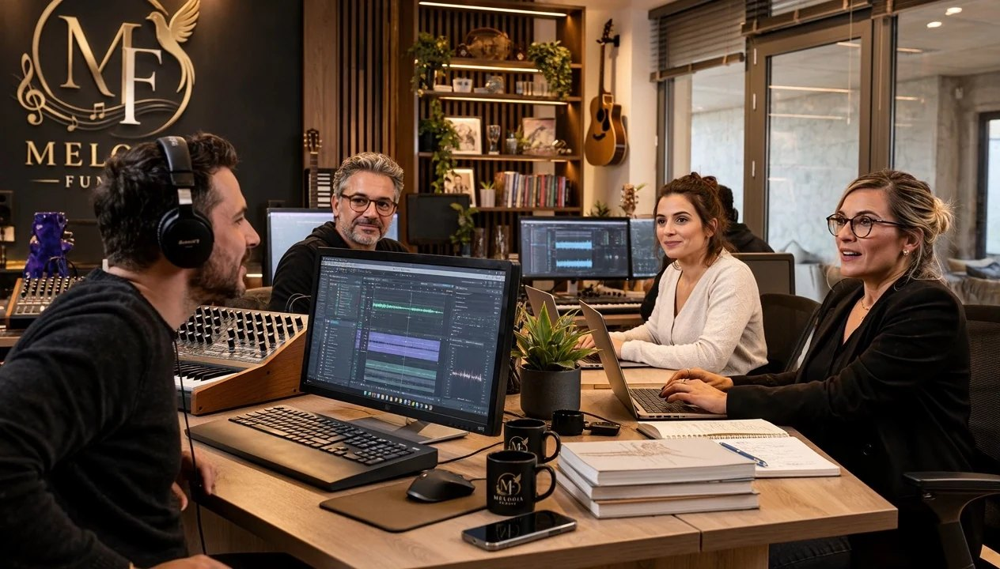
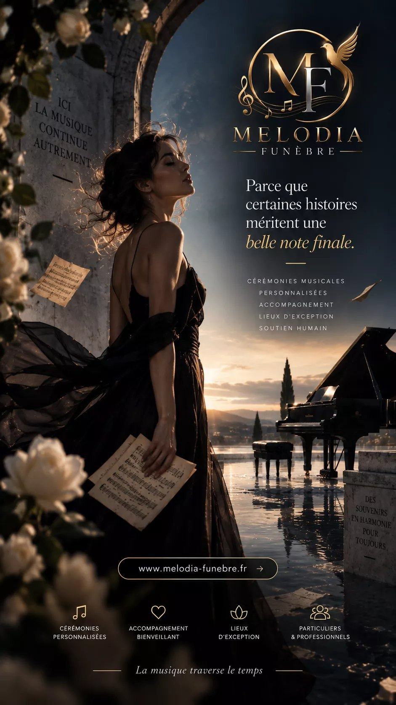
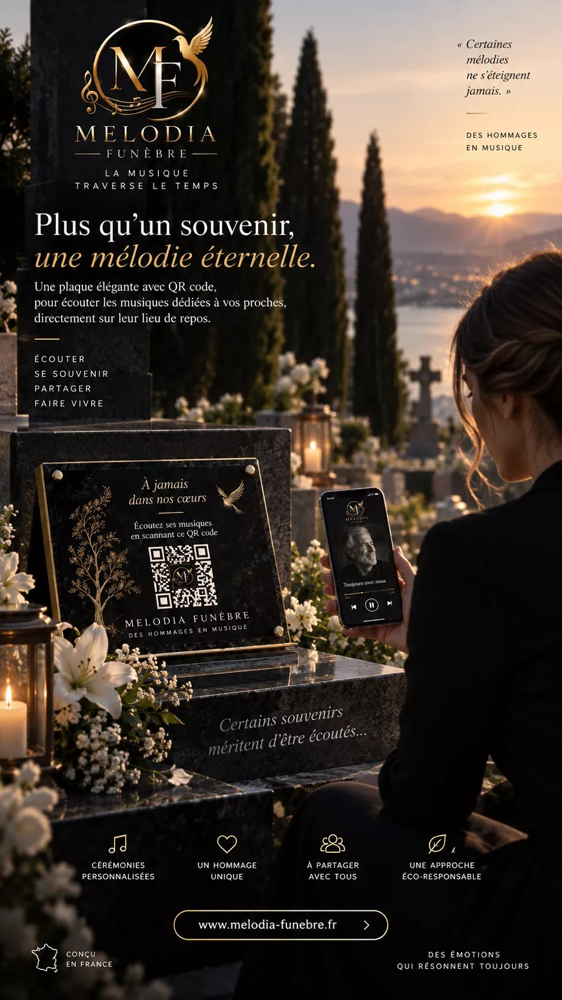

Offrez à chaque famille une chanson pour lui dire adieu.
Une œuvre originale, écrite et composée pour le défunt, livrée en 24 heures pour la cérémonie. Vous la proposez, nous faisons tout le reste — et votre agence garde 60 %.
Votre première composition est offertemelodia-funebre.fr
Le service
La musique qui l’a connu, enfin jouée à ses obsèques.
Aux obsèques, la musique n’a presque jamais connu le défunt. Avec Melodia Funèbre, la salle entend son prénom, son métier, ses manies : une chanson écrite pour lui, et pour personne d’autre.
5 min
d’entretien avec la famille, par téléphone ou dans vos bureaux
24 h
pour recevoir l’œuvre, avant la cérémonie
À vie
la musique reste à la famille, avec sa page souvenir
Paroles et musique originales, dans le style choisi, avec ou sans paroles.
Écoutée en entier par une personne avant chaque envoi, et reprise si elle ne ressemble pas au défunt.

Notre studio : chaque hommage est écrit, composé et relu par des personnes.
Votre rémunération
Un nouveau service, sans le moindre investissement.
179 €
nets pour votre agence sur chaque hommage Prestige vendu. Vous conservez 60 % du prix payé par la famille.
Essentiel
149 € famille
Une œuvre de 2 à 3 minutes, livrée en 24 h
Votre marge89,40 €
Le plus choisi
Prestige
299 € famille
Deux versions, une révision, l’instrumental
Votre marge179,40 €
Mémorial
499 € famille
Mini-album de trois titres, livret imprimé
Votre marge299,40 €
Une agence qui organise 20 obsèques par mois et vend 5 hommages Prestige* :
897 €
nets par mois
10 764 €
nets par an
Aucun stock ni abonnement
Aucun minimum, aucun engagement
Famille non satisfaite : non facturée
Zéro droit SACEM à régler
* Estimation indicative : une famille sur quatre retient l’hommage lorsqu’il lui est présenté. Ne constitue pas un engagement contractuel. Facture récapitulative mensuelle. Prix payés par la famille, TVA non applicable (art. 293 B du CGI).
Melodia Funèbre · Pour les pompes funèbres03
Comment ça marche
Trente secondes pour le proposer.
Rien à installer, aucune compétence musicale. Vous restez l’interlocuteur de la famille.
1
Vous le proposez
« Nous pouvons faire composer une chanson originale pour lui, livrée avant la cérémonie. » Puis vous faites écouter un exemple.
30 secondes
2
Vous transmettez le brief
Depuis votre espace partenaire, ou vous nous passez le contact et nous menons l’entretien en votre nom.
3 minutes
3
Nous composons
Écriture, composition, mixage, écoute de contrôle : tout est de notre côté.
24 heures
4
Vous encaissez votre marge
60 % pour votre agence, facture récapitulative chaque mois. Aucun minimum.
Chaque mois

Visuel de campagne Melodia Funèbre
Melodia Funèbre · Pour les pompes funèbres04
La plaque QR mémorial
L’hommage ne s’arrête pas à la cérémonie.
1
La plaque
Gravée par votre marbrier ou simplement posée. Le code tient en quatre centimètres.
2
Le scan
Avec l’appareil photo du téléphone. Aucune application à installer.
3
La page de souvenir
Son nom, ses dates, les mots de la famille et ses photos.
4
Sa musique
L’œuvre écrite pour lui se met à jouer, là, devant ses proches.

Essayez maintenant
Scannez ce code avec votre téléphone.
Vous arrivez sur une vraie page de souvenir, telle qu’une famille la publie. Aucune application, aucun compte.
melodia-funebre.fr/m/demo
Melodia Funèbre · Pour les pompes funèbres05
Pourquoi les agences nous rejoignent
Devenez l’agence dont on parle à la sortie.
Un vrai facteur de différence. Une expérience que les agences voisines ne proposent pas — c’est souvent ce qui fait choisir une maison.
Partenaires limités par secteur. Nous restreignons volontairement le nombre d’agences par bassin de population.
Vingt minutes pour démarrer. Compte partenaire, kit de présentation et hommages de démonstration à faire écouter.
Première œuvre offerte. Vous présentez un hommage réel à une famille, avant tout engagement.
Prochaine étape
Demandez votre démonstration.
Écoutez de vraies œuvres, découvrez l’espace partenaire, et vérifiez la disponibilité de votre secteur.